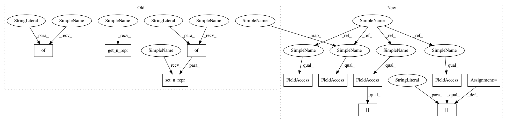

68ec624782bb4e4fb9f1adf1088cf39c1826533e,tests/pytorch/test_basics.py,,test_batch_setter_getter,#,45
Before Change
g.set_n_repr({"h" : th.zeros((10, D))})
assert _pfc(g.get_n_repr()["h"]) == [0.] * 10
// pop nodes
old_len = len(g.get_n_repr())
assert _pfc(g.pop_n_repr("h")) == [0.] * 10
assert len(g.get_n_repr()) == old_len - 1
g.set_n_repr({"h" : th.zeros((10, D))})
// set partial nodes
u = th.tensor([1, 3, 5])
g.set_n_repr({"h" : th.ones((3, D))}, u)
assert _pfc(g.get_n_repr()["h"]) == [0., 1., 0., 1., 0., 1., 0., 0., 0., 0.]
// get partial nodes
u = th.tensor([1, 2, 3])
assert _pfc(g.get_n_repr(u)["h"]) == [1., 0., 1.]
"""
s, d, eid
0, 1, 0
1, 9, 1
0, 2, 2
2, 9, 3
0, 3, 4
3, 9, 5
0, 4, 6
4, 9, 7
0, 5, 8
5, 9, 9
0, 6, 10
6, 9, 11
0, 7, 12
7, 9, 13
0, 8, 14
8, 9, 15
9, 0, 16
"""
// set all edges
g.set_e_repr({"l" : th.zeros((17, D))})
assert _pfc(g.get_e_repr()["l"]) == [0.] * 17
// pop edges
old_len = len(g.get_e_repr())
assert _pfc(g.pop_e_repr("l")) == [0.] * 17
assert len(g.get_e_repr()) == old_len - 1
g.set_e_repr({"l" : th.zeros((17, D))})
// set partial edges (many-many)
u = th.tensor([0, 0, 2, 5, 9])
v = th.tensor([1, 3, 9, 9, 0])
g.set_e_repr({"l" : th.ones((5, D))}, u, v)
truth = [0.] * 17
truth[0] = truth[4] = truth[3] = truth[9] = truth[16] = 1.
assert _pfc(g.get_e_repr()["l"]) == truth
After Change
def test_batch_setter_getter():
def _pfc(x):
return list(x.numpy()[:,0])
g = generate_graph()
// set all nodes
g.ndata["h"] = th.zeros((10, D))
assert th.allclose(g.ndata["h"], th.zeros((10, D)))
// pop nodes
old_len = len(g.ndata)
assert _pfc(g.pop_n_repr("h")) == [0.] * 10
assert len(g.ndata) == old_len - 1
g.ndata["h"] = th.zeros((10, D))
// set partial nodes
u = th.tensor([1, 3, 5])
g.nodes[u].data["h"] = th.ones((3, D))
assert _pfc(g.ndata["h"]) == [0., 1., 0., 1., 0., 1., 0., 0., 0., 0.]
// get partial nodes
u = th.tensor([1, 2, 3])
assert _pfc(g.nodes[u].data["h"]) == [1., 0., 1.]
"""
s, d, eid
0, 1, 0
1, 9, 1
0, 2, 2
2, 9, 3
0, 3, 4
3, 9, 5
0, 4, 6
4, 9, 7
0, 5, 8
5, 9, 9
0, 6, 10
6, 9, 11
0, 7, 12
7, 9, 13
0, 8, 14
8, 9, 15
9, 0, 16
"""
// set all edges
g.edata["l"] = th.zeros((17, D))
assert _pfc(g.edata["l"]) == [0.] * 17
// pop edges
old_len = len(g.edata)
assert _pfc(g.pop_e_repr("l")) == [0.] * 17
assert len(g.edata) == old_len - 1
g.edata["l"] = th.zeros((17, D))
// set partial edges (many-many)
u = th.tensor([0, 0, 2, 5, 9])
v = th.tensor([1, 3, 9, 9, 0])
g.edges[u, v].data["l"] = th.ones((5, D))
truth = [0.] * 17
truth[0] = truth[4] = truth[3] = truth[9] = truth[16] = 1.
assert _pfc(g.edata["l"]) == truth
// set partial edges (many-one)
u = th.tensor([3, 4, 6])
v = th.tensor([9])
g.edges[u, v].data["l"] = th.ones((3, D))
truth[5] = truth[7] = truth[11] = 1.
assert _pfc(g.edata["l"]) == truth
// set partial edges (one-many)
u = th.tensor([0])
v = th.tensor([4, 5, 6])
g.edges[u, v].data["l"] = th.ones((3, D))
truth[6] = truth[8] = truth[10] = 1.
assert _pfc(g.edata["l"]) == truth
// get partial edges (many-many)
In pattern: SUPERPATTERN
Frequency: 3
Non-data size: 11
Instances
Project Name: dmlc/dgl
Commit Name: 68ec624782bb4e4fb9f1adf1088cf39c1826533e
Time: 2018-11-02
Author: minjie.wang@nyu.edu
File Name: tests/pytorch/test_basics.py
Class Name:
Method Name: test_batch_setter_getter
Project Name: dmlc/dgl
Commit Name: 68ec624782bb4e4fb9f1adf1088cf39c1826533e
Time: 2018-11-02
Author: minjie.wang@nyu.edu
File Name: tests/pytorch/test_basics.py
Class Name:
Method Name: test_batch_setter_getter
Project Name: dmlc/dgl
Commit Name: 68ec624782bb4e4fb9f1adf1088cf39c1826533e
Time: 2018-11-02
Author: minjie.wang@nyu.edu
File Name: tests/pytorch/test_basics.py
Class Name:
Method Name: test_pull_0deg
Project Name: dmlc/dgl
Commit Name: 68ec624782bb4e4fb9f1adf1088cf39c1826533e
Time: 2018-11-02
Author: minjie.wang@nyu.edu
File Name: tests/pytorch/test_basics.py
Class Name:
Method Name: _disabled_test_send_twice